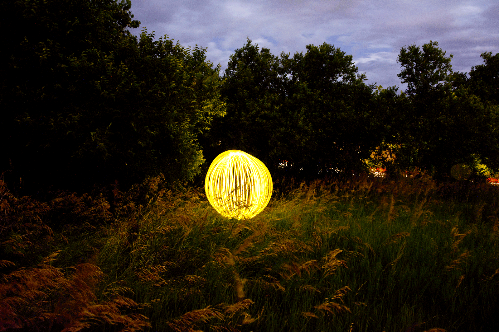
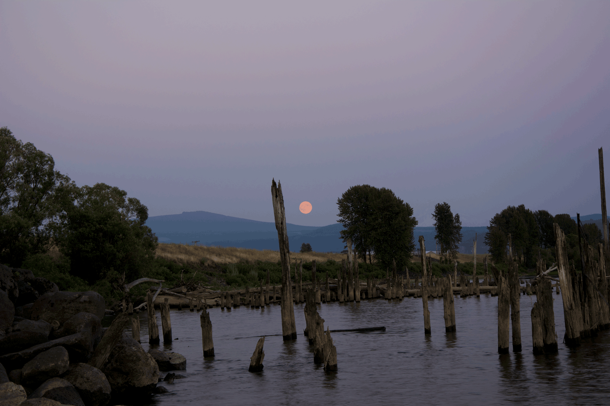

Extending my interests beyond my school education has always been something I strive for. Ever since I was little I have had an interest in pictures. I enjoyed looking through books filled with professional photography so much I decided I would like to try my hand at it. Sometime at the beginning of high school I received a small point and shoot camera from my mom so that I could try my hand. From then on I took my camera with me almost all the time. Eventually I began to be disappointed with the limitations of my cheaper camera and my interest in taking pictures waned. My interest was peaked again when one of my friends showed me his photography. His consisted mostly of low light pictures where you could paint light onto the scene to create something beautiful. With my interest renewed I asked for a DSLR camera for Christmas, which I received.
Since that time I’ve gone from simply taking pictures of things that I come across to composing pictures. Thinking about what I need to do for the shot to be perfect. The lighting, time of day, controls on my camera or what is actually in the picture. All of these come to mind when taking a picture or even when I’m just walking around without my camera. Besides getting better at taking pictures, I’ve also found I’ve gotten much better at changing my pictures afterwards in post processing. This journey from beginner to novice has been satisfying because I believe I know enough now that I can bring my photography into my other design work and because I now have at the very least a life long hobby.
There have been a lot of wasted opportunities for me, especially at the beginning, as I would constantly misjudge the lighting and mess up what would have been a beautiful picture. These moments have been depressing, but have pushed me to learn more about what I did wrong so that the next time when a similar opportunity comes around I can take a picture that I’m proud of. With all of this said, I’d like to take a look back at some of my better shots and decompose my thought process.
This shot I’ve named “light my way” and what makes me proud of this shot was it was one of my first really successful light painting shots. This shot was taken while I was with my photography friend as he was trying to teach me some of the low light basics. The main center of attention is obviously the light ball at the center. Cutting a hole in a Ping-Pong ball created this effect, duct taping a small flashlight to it with the light in the ball, and then spinning this around while rotating your body. This shot took several iterations as I experimented with exposure and timing. Also, some of the previous shots were no good because the person holding the ball would trip and mess up the path of the light. What personally I enjoy when I look back at this shot is the coloring on the grass and trees around the light ball. I believe they give the light ball a very mythical look. The trees behind, separating the light ball from the road, also give the thought that everyone on the other side of the trees is completely unaware of what is happening here. For these reasons I’m very proud of my composition.
For this image I was vacationing in Washington with my family. There was a phenomenon that made the moon appear more orange and I wanted to document the occasion. This shot was taken after I had a lot of experience with my camera so finding the right exposure was much easier. I then had to focus on composing the shot by using the landscape. I went down to the dock along the river because I thought the water could help me achieve some cool effects not just of the moon but also the sunset, which was casting a nice glow. This glow did help some other shots that I took that night, but it didn’t help the moon. What did help was that I had many different layers of different depths in my shot. Going from broken down pier to the trees to the mountain then back to the moon gave a great sense of depth that I hadn’t thought of when I first went down to the river. It is surprises like this that make photography exciting, by achieving great shots that you weren’t planning for while taking the ones that you do plan. I’m also proud of this shot because I was able to achieve very good coloring, sharpness and exposure to the shot almost immediately as I began shooting instead of fiddling with my camera before I lost the shot when the sun set behind the mountains. This realization of my growth as a photographer was incredibly satisfying.
These shots are an incredibly small selection of the shots that I can take and want to take. As my skills and passion for photography grows I hope to produce some amazing results that I can be proud to have composed myself and shared with the photographic world.